△O-02F-01F-06
1. 공개 Flow 첫 화면
결과를 먼저 보여주고, 하단은 ‘Flow 편집’과 저장 기본 행동으로 정리했습니다. 출처/주의와 옮기기 카드가 첫 화면에 계속 쌓이지 않습니다.
Owner가 볼 것
무엇이 저장되는지와 다음 행동이 3초 안에 보이는가?
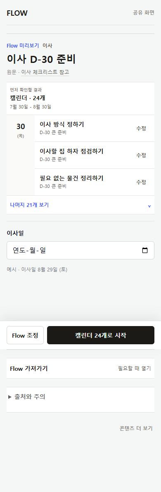
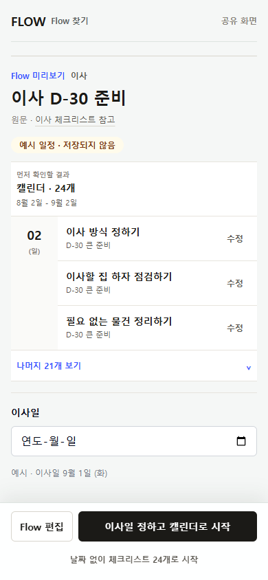
P35 · 모바일 · 피드백 추적표
사용자 피드백 16개를 Codex 검토, Claude Design 검토, 현재 구현에 한 줄씩 연결했습니다. 결론부터 말하면 일반 Flow의 저장·편집·내 Flow 연결은 정리됐고, Flow Map, Step/group 제목 수정, ‘지금 할 일/저장한 Flow’ 분리는 판단이 남았습니다.
01 · Traceability
각 행에서 누가 같은 문제를 확인했고, 지금 앱에 어느 정도 반영됐는지 바로 비교합니다.
사용자 열의 O는 “직접 제기한 항목”이라는 뜻입니다. Claude Design은 사용자 피드백 문서를 열지 않은 상태의 독립 검토였고, Codex는 사용자 문서를 본 뒤 코드·화면 근거를 추가로 대조했습니다.
02 · Visual evidence
Before는 2026-07-31 피드백 당시 화면, After는 2026-08-03 PR #165 코드와 같은 커밋을 390×844로 실행한 화면입니다.
결과를 먼저 보여주고, 하단은 ‘Flow 편집’과 저장 기본 행동으로 정리했습니다. 출처/주의와 옮기기 카드가 첫 화면에 계속 쌓이지 않습니다.
Owner가 볼 것
무엇이 저장되는지와 다음 행동이 3초 안에 보이는가?


페이지 아래로 길게 펼쳐지던 편집을 전체 높이 작업 화면으로 분리했습니다. 현재/조정 후 비교와 적용·취소가 한 작업 안에 있습니다.
Owner가 볼 것
‘화면 속 화면’이 아니라 별도 편집 작업으로 이해되는가?
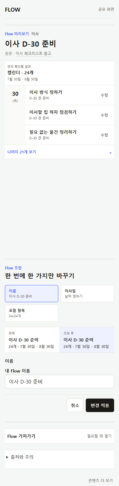
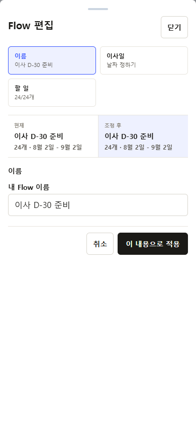
본문 안에서 열리던 카드 대신 별도 화면에서 ‘무엇을, 몇 개, 어떤 형식으로’ 옮기는지 먼저 보여줍니다. 날짜가 없는 항목의 캘린더 제한도 미리 알립니다.
Owner가 볼 것
옮기기 전에 실제 결과 범위가 충분히 예상되는가?
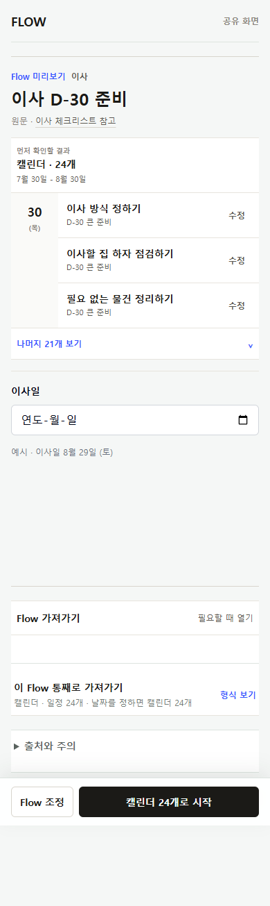
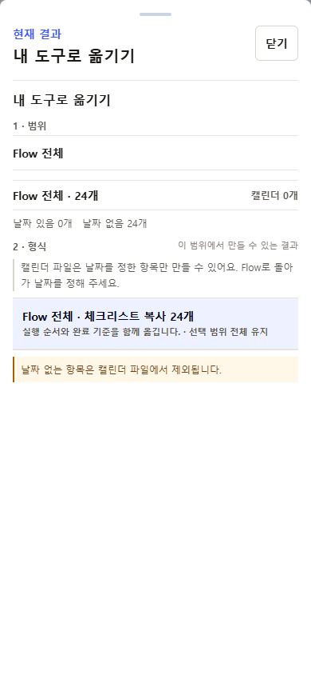
저장 요약 카드와 또 한 번의 옮기기를 제거했습니다. 실제 저장 결과와 ‘내 Flow에서 이어하기’만 남겨 다음 행동을 하나로 좁혔습니다.
Owner가 볼 것
저장이 끝났다는 사실과 다음 행동이 중복 없이 명확한가?
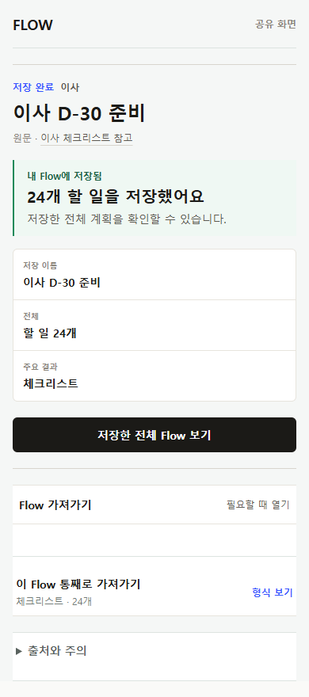
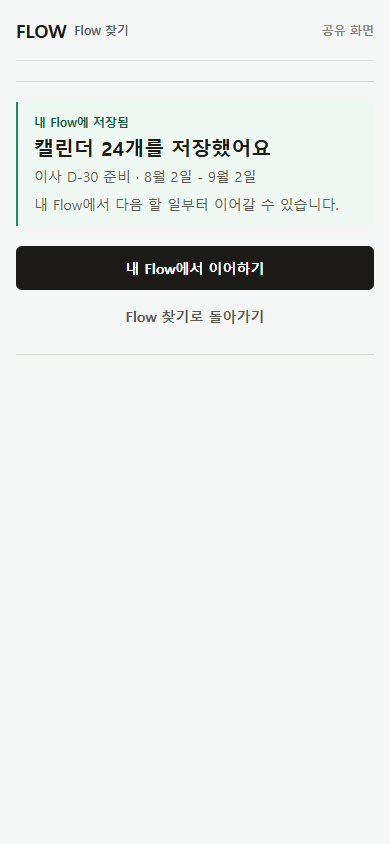
각 행의 메모·체크 버튼을 없애고 다음 3개를 먼저 보여줍니다. 전체 계획은 접고, 관리와 옮기기는 아래 단계로 내렸습니다.
Owner가 볼 것
처음 할 일은 충분히 보이면서, 전체 구조를 잃었다는 느낌은 없는가?
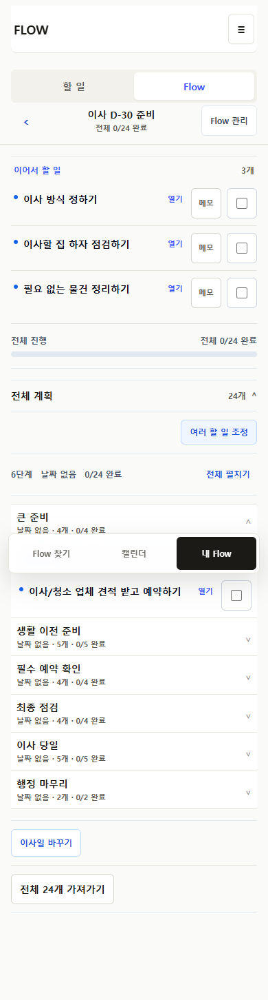
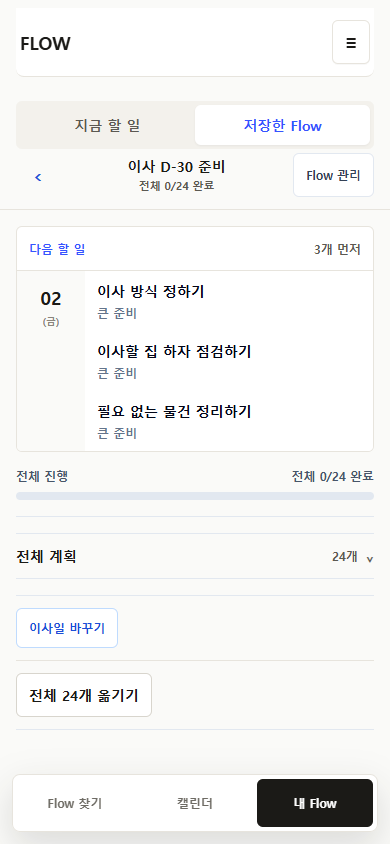
완료와 수정은 상세 한 곳에 모았습니다. 메모·일정은 필요할 때 열고, 행에서는 별도 메모 버튼을 제공하지 않습니다.
Owner가 볼 것
상세 화면이 전체 서비스와 같은 제품처럼 보이고, 할 수 있는 일이 과하지 않은가?
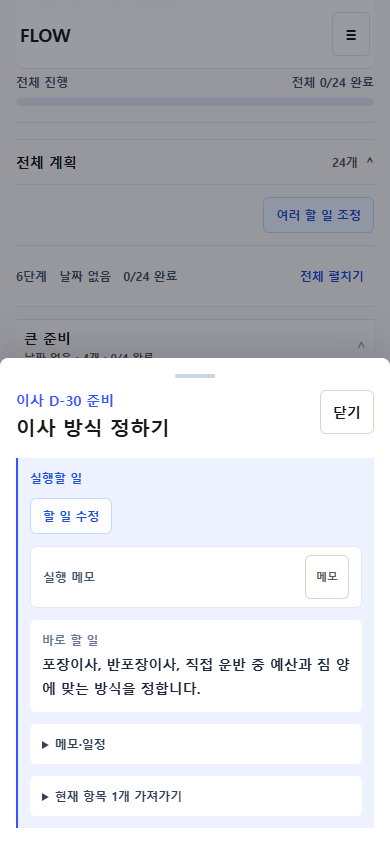
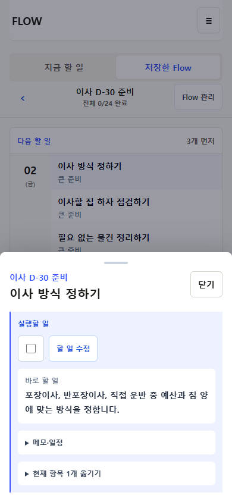
저장 행동은 ‘전체 저장하고 시작’처럼 결과를 더 명확히 말하지만, 3칸 요약과 파란 기본 CTA 등 일반 Flow와 다른 화면 문법은 남아 있습니다.
Owner가 볼 것
이 차이가 Production을 막을 정도인가, 후속 수렴으로 넘겨도 되는가?
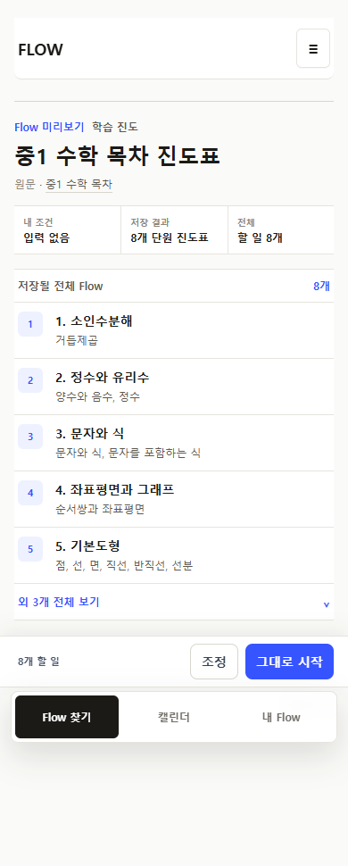
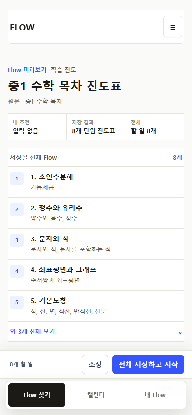
‘큰 준비’, ‘생활 이전 준비’ 같은 단계 제목은 아직 바꿀 수 없습니다. 구현되지 않았기 때문에 과장된 After 이미지를 만들지 않았습니다.
Owner가 결정할 것
이 기능이 없으면 MVP 사용이 막히는가?
현재 P0는 Flow 이름과 Item만 개인화합니다. Step/group 개인 제목이 MVP 필수라면 별도 구현 범위를 확정해야 합니다.
03 · Open decisions
‘누락’과 ‘의도적인 보류’를 구분했습니다. 앞의 세 가지는 Production 전 또는 후속 중 시점을 정해야 하고, 마지막 항목은 삭제하지 않은 이유를 설명합니다.
04 · Owner review
자동 테스트로 답할 수 없는 이해도·시각 일관성·제품 정책만 확인하면 됩니다.
3초 안에 결과와 저장 행동을 이해할 수 있는가?
Flow 편집 → Item 편집이 한 작업으로 이어지고, 중첩된 UI처럼 느껴지지 않는가?
저장 결과 → 내 Flow에서 이름·항목·날짜가 같은 Flow로 이어진다고 느껴지는가?
다음 3개와 접힌 전체 계획이 충분히 단순한가?
Step/group 소제목 수정이 없으면 실제 사용이 막히는가?
남은 화면 차이가 이번 Production의 차단 사유인가?